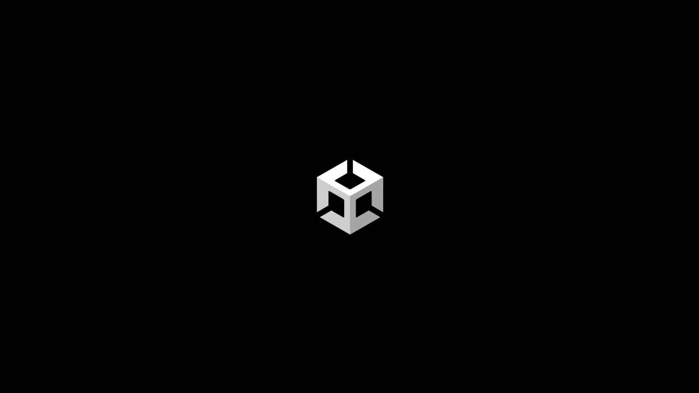

About
At Unity, I focus on creating and maintaining motion toolkits for social videos, advertisements, digital events, livestreams, and more.
The toolkits include a reference guide, font downloads, customizable motion-graphics templates (MOGRTs) for Premiere, and editable animations in After Effects.
These toolkits serve dozens of motion designers, editors, external vendors, and other employees across the company internationally.
Instructional
Technical motion toolkit used to build sizzle reels, tutorials, and other videos for Unity’s social media channels.

Branding
Logo and product animation toolkit to streamline production of logo lockups and product animations.

Ads
Motion ads toolkit containing three layouts in three social formats for paid media.
Streaming
Twitch motion toolkit containing templates for 1 to 6 streamers, with an easy to update master precomp for all source text.
Events
Event motion toolkit containing templates for 1 to 4 speakers with customizable backgrounds and logo lockups, available as MOGRTs for fast and easy turnaround.